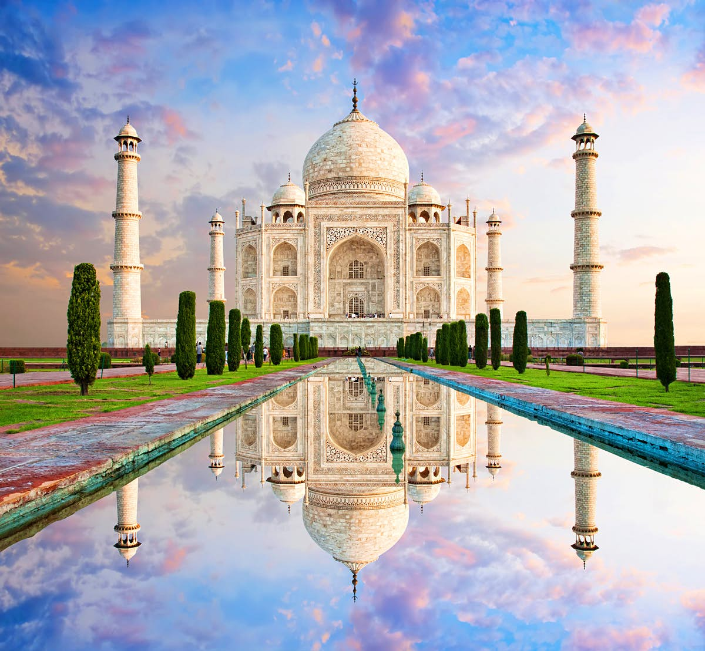
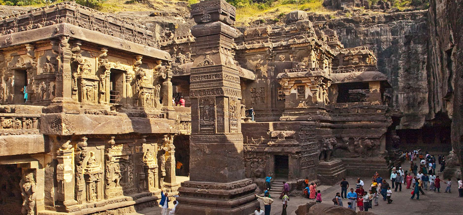
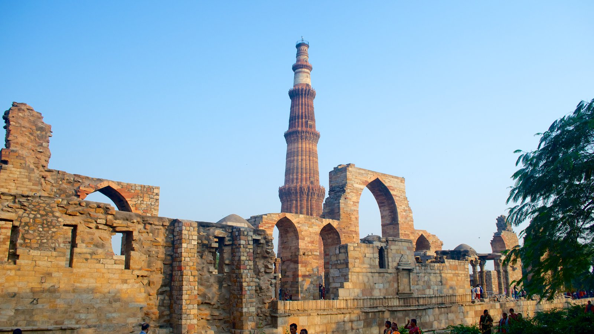
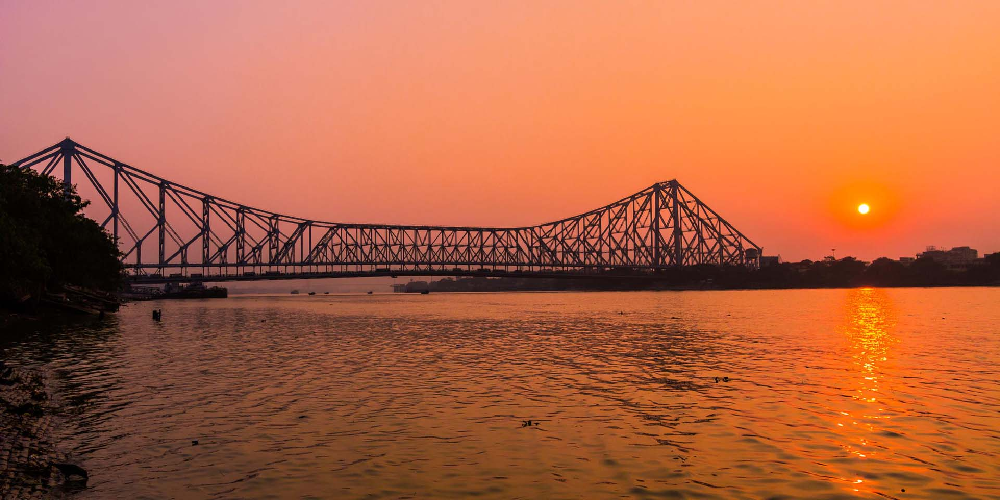

1. Taj Mahal
One of the seven wonders of the world, Taj Mahal is located on the banks of River Yamuna in Agra. It was built by the Mughal Emperor Shah
Jahan as a memorial for his third wife, Mumtaz Mahal. It also houses the tomb of Shah Jahan himself. Constructed entirely out of white marble
in the 17th century, Taj Mahal is one of the most beautiful monuments in the world. Every year visitors numbering more than the entire
population of Agra pass through the magnificent gates to catch a glimpse of this breathtaking monument. The tomb is laid out in a rectangular
shape and can be approached through a massive gateway which has an arch and alcoves on either side of it. There are water channels and
fountains in the entrance which makes the monument even more spectacular. The reflection of this majestic spectacle in the Yamuna is almost
poetic in its perfection!

2. Ajanta Ellora Caves
Ajanta and Ellora caves, considered to be one of the finest examples of ancient rock-cut caves, are located near Aurangabad in
Maharashtra, India. Ajanta and Ellora caves complex is adorned with beautiful sculptures, paintings, and frescoes and include
Buddhist monasteries, Hindu and Jain temples. The Ajanta caves are 29 in number and were built between the 2nd century BC and 6th
century AD, whereas the Ellora Caves are more spread out and 34 in number and dates to the period between 6th and 11th Century AD.
Ajanta and Ellora caves are designated as UNESCO World Heritage Sites and are quite popular among travelers worldwide. Ajanta Caves,
located around 99km north of Aurangabad, are mostly Buddhist sites and were used as a retreat by Buddhist Monks. Ellora is just 15 km
west of Aurangabad and has a better mix of Hindu, Jain, and Buddhist sites. One of the most famous places in the entire Ajanta and Ellora Caves
is the Kailash Temple, which is also the single most massive monolithic structure globally. These rock-cut caves containing carvings
are some of the best examples of ancient Indian architecture and sculpture.

3. Qutub Minar
The soaring and brave tower that allures tourists despite being destroyed by ravages of natural apocalypses several times, Qutub
Minar is the tallest individual tower in the world and second tallest monument of Delhi. A UNESCO World Heritage Site, it is
located in Mehrauli and its construction was started in 1192 by Qutb Ud-Din-Aibak, founder of Delhi Sultanate. Later, the tower
was built by various rulers over the centuries. The sight of this glorious monument takes you back to the rich history of India.

4. Howrah Bridge
An iconic landmark of Kolkata, Howrah Bridge is a massive steel bridge constructed over the Hooghly River. It is considered to
be among the longest cantilever bridges in the world. Also known as Rabindra Setu, it connects Howrah and Kolkata. It carries
daily traffic of over 100,000 vehicles and countless pedestrians and is as historic as it is grand. The opulence of the bridge,
however, comes alive in the night time as it is all lit up. You can also take a ferry ride as it runs between Kolkata and Howrah,
from the launch ghat. The view of the city from the ferry, especially in the night, is priceless, to say the least. It was the
third-longest cantilever bridge at the time of its construction, but now it is the sixth-longest one of its types. It was renamed
as Rabindra Setu on June 14, 1965, after the name of Nobel Laureate Rabindranath Tagore. It spreads about 1500 ft over the Hooghly
River and is 71 ft wide. There is a total of 8 lanes of strand road, bicycles, and pedestrians. What makes this bridge unique is
the fact that it was built without a single nut or bolt and is held together by rivets.